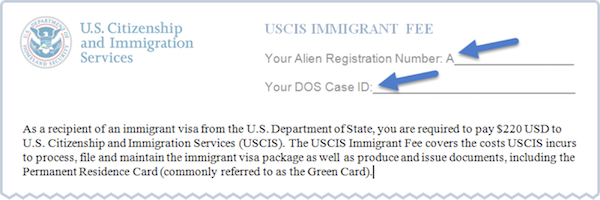

You must complete all fields with an asterisk (*) to submit this form.
USCIS Immigrant Fee
- You must provide an A-Number and Department of State Case ID (DOS Case ID) for each person who needs to pay the USCIS immigrant fee.
- Your A-Number and Department of State Case ID (DOS Case ID) are both required and can be found in your visa packet.
- 
- Your A-Number is the letter “A” followed by 7, 8 or 9 numbers (such as A012345678). On a visa stamp, your A-Number is identified as a Registration Number.
- If your A-Number is fewer than 9 digits, the system will automatically add zero(s) after the “A” and before the first digit so there is a total of 9 digits, for example: A-001234567.
- Provide a 7, 8, or 9-digit number. If the A-Number is fewer than 9 digits, the system will automatically add zero(s) after the "A" and before the first digit so there is a total of 9 digits, for example: A-001234567.
What is your DOS Case ID? *
- Provide a 12 or 13-character ID. Your DOS Case ID is 3 letters followed by 9 or 10 numbers, for example: ABC0123456789.
- If you are a Diversity Visa immigrant, your DOS Case ID will be 4 numbers followed by 2 letters and 5 more numbers, for example: 0000AB12345.
- On your visa stamp, your DOS Case ID is identified as the IV Case Number. The IV Case Number has two numbers at the end, such as 01 or 02.
- When entering the IV Case Number as the DOS Case ID, do not include the last two numbers. For example, if your IV Case Number is “ABC1234567801,” you would enter your DOS Case ID as “ABC12345678”. Do not include the “01”.
- Example: ABC123456789 or 1234AB12345